文字
背景
行間


SSH活動掲示板
SSH活動報告
第９回科学の甲子園千葉県大会
11月16日(土) 千葉 県総合教育センターにて、第９回科学の甲子園千葉県大会が行なわれました。本校からも１年生チームと２年生チームの計２チームが参加し、健闘しました。結果は後日わかります。
県総合教育センターにて、第９回科学の甲子園千葉県大会が行なわれました。本校からも１年生チームと２年生チームの計２チームが参加し、健闘しました。結果は後日わかります。
県総合教育センターにて、第９回科学の甲子園千葉県大会が行なわれました。本校からも１年生チームと２年生チームの計２チームが参加し、健闘しました。結果は後日わかります。 ＳＳＨ高大接続枠の徹底探究基礎講座「単振り子の周期測定」
投稿日時 : 2019/11/03
 sakura-h
sakura-h
11月3日（日）県立佐倉高校を会場として、ＳＳＨ高大接続枠の徹底探究基礎講座「単振り子の周期測定」が行われました。午前は単振り子の周期ついて学ぶ講義があり、午後は実際に単振り子の周期を測定し、何度（角度）で周期性が崩れるのか調べました。


2年H組（理数科）による1年生へのポスター発表
投稿日時 : 2019/10/08
sakura-h
10月8日7限に、2年H組（理数科）による1年生へのポスター発表が行われました。2年生の説明を1年生は真剣に聞いていました。和やかな雰囲気の中にも、質問も出るなど真剣なやりとりが行われていました。


SSH徹底探究基礎講座「千葉県の外来生物について考える」
10月6日（日）県立長生高校を会場として、ＳＳＨ高大接続枠の徹底探究基礎講座「千葉県の外来生物について考える」が行われ、本校１年生１０名が参加してきました。午前は外来生物について学ぶ講義があり、午後はカミツキガメの解剖実習を行い、その食性を調べました。
 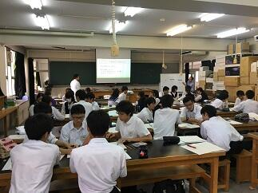
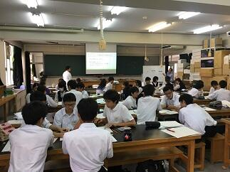
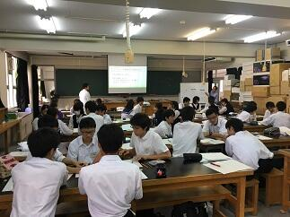 国内サイエンスツアー最終日
千葉大学海洋バイオシステム研究センターにて海岸生物観察実習を行いました。海岸の生物観察だけでなく、アクキガイ科巻貝の中腸腺を用いて、黄緑色から貝紫色に変化する化学反応の様子も観察しました。３日間とも天気に恵まれ、充実した研修となりました。


 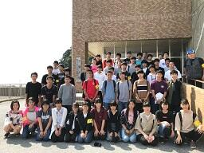
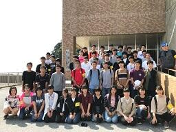
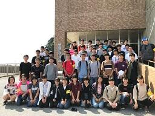 国内サイエンスツアー第２日
昨日の夜の学習も生徒は熱心に取り組みました（浴衣姿も見られます）。引き続き晴天に恵まれた本日（10月2日）はハンマーやクリノメーターを使った地層の観察の実習と夜の「葉っぱテスト」に向けた植物の観察を含めた森林実習を行いました。
 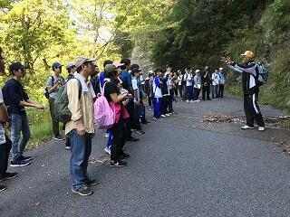
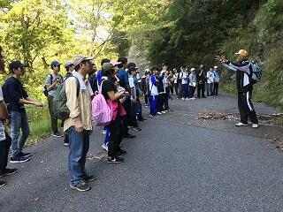

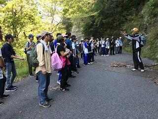 国内サイエンスツアー 第１日
国内サイエンスツアーで理数科１年40名、普通科１年6名が鴨川市を訪れています。本日(10月1日)の日中は森林実習調査を行いました。夜に班ごとに調査結果を模造紙にまとめます。


第13回高校生理科研究発表会
9月28日（土）千葉大学にて高校生理科研究発表会が行われました。２年理数科の生徒たちが日ごろの課題研究の成果を発表しました。物理Ⅰ分野で「集音レンズを用いた新たな通信機器の開発」（月山・後屋敷）、化学Ⅰ分野で「ビスマス極板を用いた電気分解における色の変化と条件」（薄田・江尻・安井・山口）の計２チーム６名が優秀賞を受賞しました。また、朝日新聞社教育総合本部長賞として、本校理科教諭の村瀬恵正教諭が受賞しました。


SSH徹底探究基礎講座「手賀沼の水質調査」
投稿日時 : 2019/09/16
sakura-h
9月15日（日）に県立柏高校を会場として、ＳＳＨ高大接続枠の徹底探究基礎講座「手賀沼の水質調査」が行なわれ、本校１年生７名が参加してきました。午前の実習は「手賀沼で採水した試料２種類についてＣＯＤの測定を行い、水質について考察する」があり、午後は実習のまとめのポスター作成と発表といった内容でした。


SSH講座 シリーズ生物観察２「人の脳が豚の脳を見て考える」
投稿日時 : 2019/09/03
sakura-h
８月３１日に、SSH講座 シリーズ生物観察２「人の脳が豚の脳を見て考える」が本校生物実験室で実施されました。例年人気の講座で２５名の生徒が参加しました。実際に豚の頭を持ったり観察します。さらには注意深く解剖していき、目や内耳の構造や脳についても観察をしていきます。教科書の中の図や写真だけでは分からないことを体験できる素晴らしい講座です。医学や獣医師系統を志す生徒には、生命の尊さを含め貴重な体験になったと思います。生徒の真剣な表情が印象に残りました。解剖ですので、少し刺激的な画像もありますので注意してください。

ＳＳＨ講座「チバニアンってなんだ？」
投稿日時 : 2019/08/09
sakura-h
8月8日(木)に2年生1名と1年生理数科7名でＧＳＳＰに申請中の標準模式地、市原市田淵の露頭に行ってきました。講師は千葉県中央博物館地学研究科の 高橋 直樹 先生です。約77万年前に地磁気が逆転したと言われる証拠となる地層を見学しました。右下写真の白い看板の20㎝上（少し色が変わってへこんでいる様子がわかります）からが「チバニアン」と呼ばれる予定の地層です。（上総層群国本層と呼ばれる地層です）


その後、養老渓谷に場所を移し、梅が瀬層、大田代層、黄和田層を観察したり、地層の調査方法を実習しました。1000ｍを超える深海に堆積した地層にもかかわらず、木片の化石が発見できました。（右下写真）

最後は別名「養老の滝」でおなじみの「粟又の滝」（写真奥）で１ｍにも及ぶ火山灰層を観察し、一日の行程を終えました。暑い中ではありましたが、充実した野外実習となりました。
その後、養老渓谷に場所を移し、梅が瀬層、大田代層、黄和田層を観察したり、地層の調査方法を実習しました。1000ｍを超える深海に堆積した地層にもかかわらず、木片の化石が発見できました。（右下写真）
最後は別名「養老の滝」でおなじみの「粟又の滝」（写真奥）で１ｍにも及ぶ火山灰層を観察し、一日の行程を終えました。暑い中ではありましたが、充実した野外実習となりました。
ＳＳＨ生徒研究発表会 ＩＮ 神戸
8/7(水)、8日(木)の2日間、神戸国際展示場にてSSH生徒研究発表会に3年H組の女子２名が「はたらく糖分〜藍染の新還元剤発見！？〜」というタイトルで参加しています。国内からSSH218校、国外から23校参加しており、生徒たちは研究内容に関して、積極的に意見交換をしていました。


徹底探究基礎講座
投稿日時 : 2019/08/06
sakura-h
8月4日（日）に木更津高校を会場として，ＳＳＨ重点枠（高大接続）の徹底探究基礎講座「画像解析ソフトを用いた天文分野の実習」が行なわれ，本校1年生9名が参加してきました。午前は講義（太陽の表面構造とシュテファン・ボルツマンの法則について、黒点の温度測定の原理）があり、午後の実習は画像解析ソフトMakali`i（マカリ・マカリィ）を使って①太陽面の周辺減光の様子の調査②黒点の温度をマカリの「測光」機能を使って求めるグループ活動③マカリを天文画像以外の解析で活用する探究活動を考える④グループ活動の成果をスライドで発表）といった内容でした。これは県立SSH校の柏高校・長生高校・船橋高校・佐倉高校・木更津高校と千葉大学が「SSH高大接続コンソーシアム」という団体を組んで“グローバルなプロジェクトを牽引する次世代型科学技術系リーダーの創出”を目標に取り組んでいる活動のプログラムの１つです。本校の３４名の1年生がこの高大接続プログラムに希望し参加しています。

佐倉アクティブ「東大・小石川植物園で樹木と向き合う」
投稿日時 : 2019/08/01
sakura-h
令和元年7月27日（土）
佐倉アクティブ「東大・小石川植物園で樹木と向き合う」
講師：本校生物科教諭
東京大学大学院理学系研究科附属植物園（小石川植物園）に理科好き・植物好きが集まり，植物の徹底的な観察と解説，植物学の楽しさについて語り合いました。水道橋駅を出るやいなや樹木の学習がスタート。数々の街路樹の種名や，バラ科サクラ属の分類鑑別点などを覚えながら，植物学の世界にどっぷり浸る熱い一日が始まりました。園内の柴田記念館では専門職員に歴史などをご講義いただき，有名なメンデルのブドウやニュートンのリンゴ，精子発見のソテツやイチョウといった記念碑的な植栽に触れながら，感慨深く観察しました。最新のAPG分類体系による知見も交えながら，教科書レベルを超えたハイレベルな植物学習を行いましたが，本物を間近で見ながらの学習は参加者にとってたいへん稀有な体験となったことでしょう。昼食は東大本郷キャンパスの食堂でいただき，その後キャンパス内を案内しながら弥生キャンパスにて校舎内を見学，さらに工学部や理学部，薬学部，医学部などを巡りました。喧騒の都心にありながら静寂のひとときを感じる三四郎池の散策，溢れんばかりの蔵書数を誇る生協書店で本を買うなど，植物学と学問の香りに向学心と決意を新たにした一日でした。


佐倉アクティブ「東大・小石川植物園で樹木と向き合う」
講師：本校生物科教諭
東京大学大学院理学系研究科附属植物園（小石川植物園）に理科好き・植物好きが集まり，植物の徹底的な観察と解説，植物学の楽しさについて語り合いました。水道橋駅を出るやいなや樹木の学習がスタート。数々の街路樹の種名や，バラ科サクラ属の分類鑑別点などを覚えながら，植物学の世界にどっぷり浸る熱い一日が始まりました。園内の柴田記念館では専門職員に歴史などをご講義いただき，有名なメンデルのブドウやニュートンのリンゴ，精子発見のソテツやイチョウといった記念碑的な植栽に触れながら，感慨深く観察しました。最新のAPG分類体系による知見も交えながら，教科書レベルを超えたハイレベルな植物学習を行いましたが，本物を間近で見ながらの学習は参加者にとってたいへん稀有な体験となったことでしょう。昼食は東大本郷キャンパスの食堂でいただき，その後キャンパス内を案内しながら弥生キャンパスにて校舎内を見学，さらに工学部や理学部，薬学部，医学部などを巡りました。喧騒の都心にありながら静寂のひとときを感じる三四郎池の散策，溢れんばかりの蔵書数を誇る生協書店で本を買うなど，植物学と学問の香りに向学心と決意を新たにした一日でした。
第９回千葉サイエンススクールフェスティバル
７月２８日（日）に第９回千葉サイエンススクールフェスティバルが千葉工業大学津田沼キャンパスで行われ、科学系部活動（生物部・電気部・化学部）の生徒２３名が参加しました。午前の部は、小中学生に向けてブースの運営や、夏休みの自由研究についての相談コーナーを担当しました。午後の部では科学に関するゲームを行い、他校の高校生との交流を深めました。
【午前の部】
 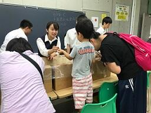
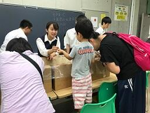
生物部（しじみ釣り） 電気部（エレクトラム）


化学部（スライム作り） 自由研究の相談ブース


【午後の部】
サイエンスコミュニケーション（限られた材料を使ってどれだけ強度の高い橋を作れるかを競いました。
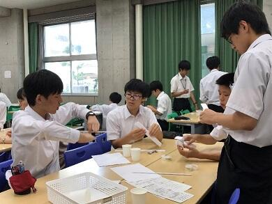
【午前の部】
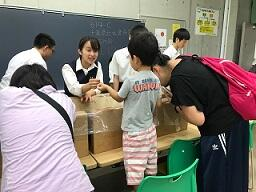生物部（しじみ釣り） 電気部（エレクトラム）
化学部（スライム作り） 自由研究の相談ブース
【午後の部】
サイエンスコミュニケーション（限られた材料を使ってどれだけ強度の高い橋を作れるかを競いました。
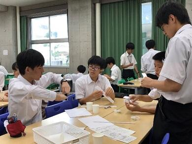
SS課題研究Ⅱ発表会
投稿日時 : 2019/07/19
sakura-h
７月１６日（火）にSS課題研究Ⅱ発表会が行なわれ、生徒たちは限られた時間の中で課題研究の結果をプレゼンテーションソフトを用いて熱心に説明しました。質疑応答も行なわれ活発なやりとりが展開されました。


SSH講座 「植物の成分を精製してみよう！」
投稿日時 : 2019/07/10
sakura-h
令和元年７月９日（火）の午後、佐倉市の株式会社常磐植物化学研究所において「植物の成分を精製してみよう！」をテーマにSSH講座が開催されました。１年生１７名、２年生７名の計２４名が参加し、施設見学、ハーブ園研修、実験実習を行いました。
施設見学では、原料から製品として出荷されるまでの一連の流れや研究室での製品チェック、製品の管理の様子などを丁寧に説明していただきました。
ハーブ園では、新設された薔薇コーナーで薔薇の中でも最も香りが良いとされ「薔薇の女王」ともいわれるダマローズの香りをかいだり、天然甘味料として知られ砂糖よりも低カロリーであるステビアの葉の甘さ体験をはじめ、カレーププランツ、ビロードモーズイカ、ニッコウキスゲなどについて触れたり、においを確認したり、味をみたりしながら研修しました。最後に蒸し暑さを和らげるようなマロウ、ニッキ、レモングラス、ペーパーミントで作られた暖かい特性ハーブティーも試飲しました。
今年の実験実習は、昨年度までとは大きく変わり，ブルーベリーの果実からのアントシアニンの精製を固相抽出法にて行いました。高校では、使う機会がほとんどない器具を使っての実習でしたが、皆、無事に目的とするものを分離精製出来ました。
午後の４時間ほどの講座でしたが、とても充実した講座になりました。
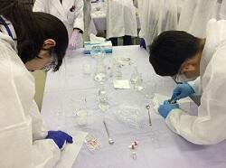


施設見学では、原料から製品として出荷されるまでの一連の流れや研究室での製品チェック、製品の管理の様子などを丁寧に説明していただきました。
ハーブ園では、新設された薔薇コーナーで薔薇の中でも最も香りが良いとされ「薔薇の女王」ともいわれるダマローズの香りをかいだり、天然甘味料として知られ砂糖よりも低カロリーであるステビアの葉の甘さ体験をはじめ、カレーププランツ、ビロードモーズイカ、ニッコウキスゲなどについて触れたり、においを確認したり、味をみたりしながら研修しました。最後に蒸し暑さを和らげるようなマロウ、ニッキ、レモングラス、ペーパーミントで作られた暖かい特性ハーブティーも試飲しました。
今年の実験実習は、昨年度までとは大きく変わり，ブルーベリーの果実からのアントシアニンの精製を固相抽出法にて行いました。高校では、使う機会がほとんどない器具を使っての実習でしたが、皆、無事に目的とするものを分離精製出来ました。
午後の４時間ほどの講座でしたが、とても充実した講座になりました。
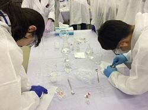
千葉県課題研究会に参加しました
平成３１年３月１６日（土）に千葉工業大学を会場に開催された平成３０年度第１０回千葉県課題研究会に参加しました。
午前は、分科会形式での口頭発表、午後はポスター発表でした。本校からは、口頭発表部門の物理、化学、生物、地学、数学の５分野に各１組ずつが参加し、日ごろの課題研究の成果を発表しました。
また、ポスター発表では、口頭発表の５分野に加え、ＳＧＨ分野にも参加ました。物理分野に８組、化学分野に２組、生物分野に６組、地学分野に１組、数学分野に１組の１８組、ＳＧＨ分野に３組の計２１組が研究の成果を発表しました。ＳＧＨ分野は、今年度初めて設けられた分野で、本校から参加した３組の１年生は、いずれも丁寧に研究の内容を紹介していました。

 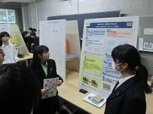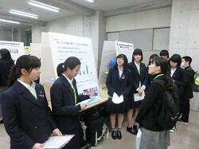
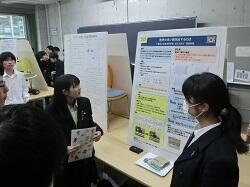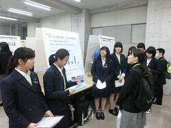 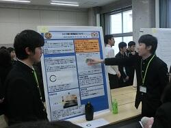
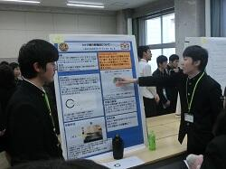
午前は、分科会形式での口頭発表、午後はポスター発表でした。本校からは、口頭発表部門の物理、化学、生物、地学、数学の５分野に各１組ずつが参加し、日ごろの課題研究の成果を発表しました。
また、ポスター発表では、口頭発表の５分野に加え、ＳＧＨ分野にも参加ました。物理分野に８組、化学分野に２組、生物分野に６組、地学分野に１組、数学分野に１組の１８組、ＳＧＨ分野に３組の計２１組が研究の成果を発表しました。ＳＧＨ分野は、今年度初めて設けられた分野で、本校から参加した３組の１年生は、いずれも丁寧に研究の内容を紹介していました。
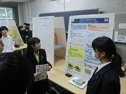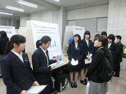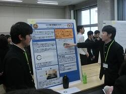 東邦大学－韓国国立慶尚大学校 合同シンポジウム
投稿日時 : 2019/02/26
sakura-h
平成３１年２月２３日（土）に東邦大学習志野キャンパスで開催された「4th Toho Univ.-GNU Joint Symposium on Advanced Chemical Science」に理数科２年生の２組４名が参加しました。
当日は、東邦大学および韓国国立慶尚大学校の研究者や大学院生、県内外５校からの高校生とともに、昼食時間以外のコミュニケーションは、ほぼオールイングリッシュという一日を過ごしました。
高校生は、フラッシュプレゼンテーションとポスター発表で日頃の研究の成果を発表しました。
その結果、多々良実子さん・山口依子さんがベストポスター賞を受賞しました。「Water Clean Project～How to clean water with Charcoal～」（ウォーター・クリーン計画！～炭を用いた水の浄化～）という研究発表でした。


当日は、東邦大学および韓国国立慶尚大学校の研究者や大学院生、県内外５校からの高校生とともに、昼食時間以外のコミュニケーションは、ほぼオールイングリッシュという一日を過ごしました。
高校生は、フラッシュプレゼンテーションとポスター発表で日頃の研究の成果を発表しました。
その結果、多々良実子さん・山口依子さんがベストポスター賞を受賞しました。「Water Clean Project～How to clean water with Charcoal～」（ウォーター・クリーン計画！～炭を用いた水の浄化～）という研究発表でした。
第７回生徒研究成果合同発表会 The7th Toyama Science Symposium
投稿日時 : 2019/02/04
sakura-h
平成３１年２月３日（日）に東京都立戸山高等学校で行われた第７回生徒研究成果合同発表会に参加し、理数科２年生の５チームが発表を行いました。複数の専門家からアドバイスをいただくことができ、今後の研究方針を考えるよい機会となりました。また、理数科１年生も４名見学しました。
 |  |  |
| （数学）ｎ色問題 ～星形正五角形～ | （生物）蟻がとう～ギ酸で防カビに挑む～ | （生物）ダンゴムシは美食家？ ～ダンゴムシの好物についての研究～ |
 |  |  |
| （生物）ヒトの眼の解像度について | （地学）消波ブロックによる砂浜への影響 | |
クリスマスレクチャー「有機化学実験講座」
平成３０年１２月２２日（土）、２３日（日）の２日間、東邦大学理学部においてクリスマスレクチャー「有機化学実験講座」が開催されました。２年生４名、１年生１０名の計１４名（普通科５名、理数科９名）が参加しました。
講座内容は、解熱鎮痛剤として使用されているアスピリン（アセチルサリチル酸）をサリチル酸から合成・精製し、合成したものがアスピリンであるかを融点測定や塩化鉄(Ⅲ)溶液による定性試験、三種類の機器分析（MS・IR・NMR）により同定しました。また、コンピュータ上での分子モデリングを行いました。大学の先生やＴＡの学生さんのサポートを受けながら、一人ですべての工程を行い、全員無事にアスピリンを合成できたことを確認することができました。
講座内容は、解熱鎮痛剤として使用されているアスピリン（アセチルサリチル酸）をサリチル酸から合成・精製し、合成したものがアスピリンであるかを融点測定や塩化鉄(Ⅲ)溶液による定性試験、三種類の機器分析（MS・IR・NMR）により同定しました。また、コンピュータ上での分子モデリングを行いました。大学の先生やＴＡの学生さんのサポートを受けながら、一人ですべての工程を行い、全員無事にアスピリンを合成できたことを確認することができました。
| 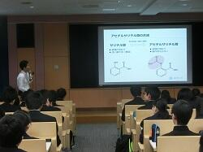 |  | 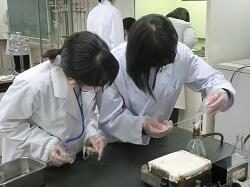 |
| 講義 | 合成実験 | 合成実験 |
| 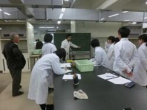 | 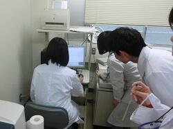 | 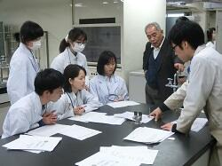 |
| データ分析 | NMR実習 | データ分析 |
 | 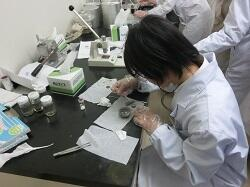 | 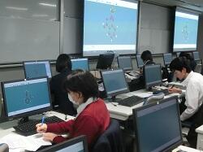 |
| 融点測定 | IR実習 | 分子モデリング実習 |
サイエンス・ダイアログを実施しました
平成３０年１２月１１日（火）６・７限 理数科１・２年生が「サイエンス・ダイアログ プログラム」を利用して、日本の研究機関で活躍されている外国人研究者の方から「ｍＲＮＡによる脊髄損傷治療について」という内容で講義を受けました。
最先端の研究内容を英語で話していただいたため、内容を理解するのに非常に苦労しましたが、研究への熱意に触れることができました。もっと英語を勉強して理解できるようになりたいと感じた人も多かったようです。
「サイエンス・ダイアログ」とは、（独）日本学術振興会（ＪＳＰＳ）のフェローシップ制度により、日本の大学・研究機関等に滞在している優秀な若手外国人研究者（JSPSフェロー）を、講師として高等学校等に派遣していただくもので、講師の方の研究や出身国に関する講義が英語で実施されます。研究内容や経歴について英語で聞くという経験を通じて、研究への関心や国際理解を深めることを目的として行われています。


最先端の研究内容を英語で話していただいたため、内容を理解するのに非常に苦労しましたが、研究への熱意に触れることができました。もっと英語を勉強して理解できるようになりたいと感じた人も多かったようです。
「サイエンス・ダイアログ」とは、（独）日本学術振興会（ＪＳＰＳ）のフェローシップ制度により、日本の大学・研究機関等に滞在している優秀な若手外国人研究者（JSPSフェロー）を、講師として高等学校等に派遣していただくもので、講師の方の研究や出身国に関する講義が英語で実施されます。研究内容や経歴について英語で聞くという経験を通じて、研究への関心や国際理解を深めることを目的として行われています。
第７回千葉県高校生科学研究発表会に参加してきました
投稿日時 : 2018/11/27
sakura-h
１１月２４日（土）千葉大学で行われた千葉県高校生科学研究発表会に３チーム（６名）が参加してきました。今回の発表会は口頭発表でした。初めての口頭発表でしたが、それぞれ意見やアドバイスをいただき、今後の研究に意欲を燃やしていました。

科学の甲子園千葉県大会に出場しました。
投稿日時 : 2018/11/19
sakura-h
11月17日（土）千葉県総合教育センターにて開催された科学の甲子園千葉県大会に、天文気象部チーム（1・2年生）と、1年理数科（ほぼ生物部）チームが参戦しました。1年生にとっては未履修の単元や科目が多いのに加え、過去問はどれも難しく準備には苦労しました。1年理数科チームは放課後に生物室で学習会を開き、2・3年で学習する教科書の読破と筆記競技・実技競技の練習を連日積み重ねて臨みました。さてその結果は……？（結果発表は後日です。）
理数好きが一堂に会する本大会の参加者たちは、必ずやどこかで再会する仲間のはずです。この大会は生徒たちにとって人生における歴史的な出会いの場となったのではないでしょうか。

左 Ａチーム（天文気象部チーム） 右Ｂチーム（１年Ｈ組チーム）
理数好きが一堂に会する本大会の参加者たちは、必ずやどこかで再会する仲間のはずです。この大会は生徒たちにとって人生における歴史的な出会いの場となったのではないでしょうか。
左 Ａチーム（天文気象部チーム） 右Ｂチーム（１年Ｈ組チーム）
サイエンスツアー
投稿日時 : 2018/11/05
sakura-h
理数科１年生対象の１０月に実施された国内サイエンスツアーは、初日は台風の影響で予定より集合時間を遅らせましたが、無事に研修場所である県立内浦山県民の森の宿泊施設に午後３時に到着しました。送迎等御協力くださった保護者の皆様、感謝いたします。
初日１０月１日（月）の昼は、森林調査実習として、コドラ―トと呼ばれる植生調査を行い7m×7mの範囲に含まれる樹木の位置、高さ、太さ、種類、側面図等を記録しました。その後、森林調査のまとめを行い、夜には２日目に行う地学実習に向けた授業を受け、地層の傾斜等を調べる時に用いるクリノメーターの使い方を学びました。


１０月２日（火）SSH国内サイエンスツアー２日目は、地学実習で露頭部分の地層を観察、クリノメーターを用いた地層面の傾斜角測定などを行いました。また、清澄寺では、天然記念物の清澄の大杉の樹高を班ごとに工夫しながら計測する実習も行いました。植物の葉を採取しながら、宿舎では葉などの情報から、図鑑を見ないで行う植物同定の実習も行いました。クスノキ科やブナ科等の主要な植物や、紛らわしい植物約20種類の見分け方を学び、植物を自分で同定できる喜びを教えてもらいました。教室では体験できない多くの実習を経験できています。


１０月３日（水）国内サイエンスツアーの最終日です。本日の活動は、千葉大学海洋バイオシステム研究センターを見学した後、海岸で海洋生物の観察実習がありました。海岸での観察実習では、貝や魚、蟹の名前や、貝が危険を察知した際の行動、貝紫というアクキガイ科の巻貝の内臓を紫外線に当てた際の紫色の発色、を教わり、実際に紫になるのか実験をしました。また、地層の観察も行い、嵐があった後など、地層から何が分かるかを教えてもらいました。実習終了後、予定通りの電車に乗車し解散しました。２泊３日の国内サイエンスツアーは無事終了しました。


佐倉サイエンス【地学】
投稿日時 : 2018/10/31
sakura-h
今日の「佐倉サイエンス」では先週お休みだった地学「有孔虫を観察しよう」が行われました。
0.063mmのふるいで泥を水洗し，過酸化水素水等で処理をしたサンプルから分離された有孔虫の種を図鑑で同定し，その生息環境から，地層堆積当時の環境を推定しました。
0.063mmのふるいで泥を水洗し，過酸化水素水等で処理をしたサンプルから分離された有孔虫の種を図鑑で同定し，その生息環境から，地層堆積当時の環境を推定しました。
佐倉サイエンス
今日の「佐倉サイエンス」は物理が「運動と力」，化学が「墨流しで分子をとらえる」，生物が「標本の採集と整理」，数学が「ゾムツール」の実習をそれぞれ行いました。
学校設定科目「佐倉サイエンス」は物理・化学・生物・地学・数学の基本的な実習を行う理数科１年生の科目です。（今回地学はお休み）
【化学】


【生物】


【物理】


【数学】
 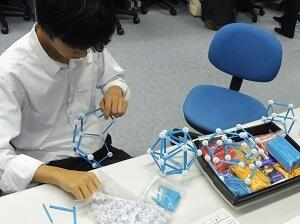
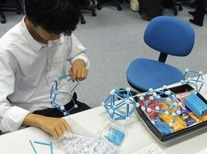
学校設定科目「佐倉サイエンス」は物理・化学・生物・地学・数学の基本的な実習を行う理数科１年生の科目です。（今回地学はお休み）
【化学】
測定したステアリン酸の単分子膜の面積と１分子の断面積のデータより，滴下したステアリン酸の分子数を求め，滴下したステアリン酸の質量から１モルの粒子数（アボガドロ定数：NA）を求めました。また墨流しを体験し，カラフルなマーブル模様を紙に写しとりました。なお，今回はガラス細工でスポイトも自作です。
【生物】
採集（記録の仕方）・標本作成法（乾燥標本や浸液標本の作製方法）の講義後，採集したナメクジの歯舌を取りだし顕微鏡で観察をしました。
【物理】
作ったペットボトルロケットを打ち上げて，得られた「打上角度・噴射水量・空気圧・飛行距離」の各データを解析し，最も遠くに飛ばす「打上角度・噴射水量と空気圧との関係」を探りました。
【数学】
ゾムツールで簡単な多面体をつくりました。この実習は11/17（土）と11/24（土）で実施予定のSSH講座「多面体の数学的性質とゾムツールを用いた多面体作成実習」では発展した内容になります。現在参加希望者募集中です。
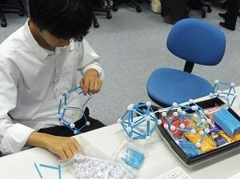SSHポスターセッション
投稿日時 : 2018/10/11
sakura-h
平成３０年１０月９日（火）７限に、理数科２年生が１年生全員に向けて、SS課題研究Ⅰで取り組んでいる研究テーマについてポスター発表を行いました。１年生は、複数の発表からポスター発表の方法について学習しました。
各グループの発表要旨は、こちら からPDFでご覧いただけます。


高校生理科研究発表会（今年度９月）で優秀賞を受賞した二班のポスター
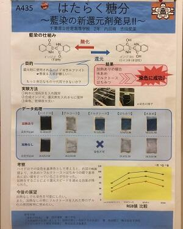
第12回 高校生理科研究発表会
投稿日時 : 2018/10/02
sakura-h
理数科２年生全員が、SS課題研究Ⅰの中間発表的な位置づけで９月２９日（土）に千葉大学で開催された発表会に参加してきました。
年度当初に希望した物理分野８、化学分野２、生物分野６、地学分野１、数学分野１の計１８テーマに分かれ、夏休みや休日を返上して実験・観察を繰り返し、初めてポスターを作成し校外での発表会に臨みました。「たくさんアドバイスをもらえて良かった」という発言が多く聞かれ、今後の研究への意欲を燃やしていました。また、物理分野の「泥はね軽減靴底の開発」、化学分野の「働く糖分～藍染めの新還元剤発見！？～」の２つの発表が優秀賞を受賞して表彰されました。


年度当初に希望した物理分野８、化学分野２、生物分野６、地学分野１、数学分野１の計１８テーマに分かれ、夏休みや休日を返上して実験・観察を繰り返し、初めてポスターを作成し校外での発表会に臨みました。「たくさんアドバイスをもらえて良かった」という発言が多く聞かれ、今後の研究への意欲を燃やしていました。また、物理分野の「泥はね軽減靴底の開発」、化学分野の「働く糖分～藍染めの新還元剤発見！？～」の２つの発表が優秀賞を受賞して表彰されました。
SS課題研究Ⅱ口頭発表会
平成３０年９月１１日(火)午後から本校地域交流施設にて、「SS課題研究Ⅱ口頭発表会」が行われました。理数科行事として、３年生が昨年度からの自らの研究の成果を理数科1・2年生や職員の前で、それぞれスライドにまとめて発表しました。数学部門１、物理部門６、化学部門６、生物部門５の1８グループが、発表時間５分、質疑応答３分の短い時間の中で説明しました。研究成果を５分でわかりやすく説明するために、それぞれ、いろいろと工夫して発表していました。発表後は、後輩達との活発な質疑応答がなされました。
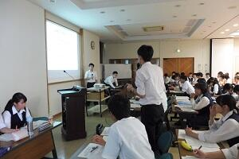
 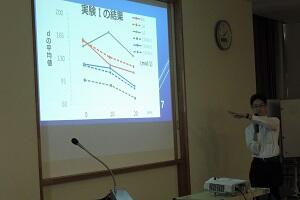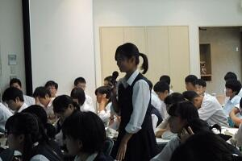
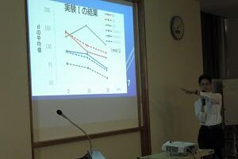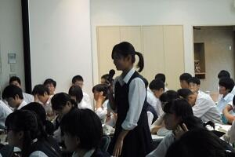
 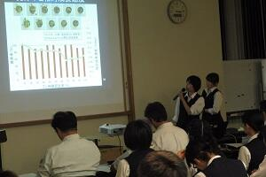
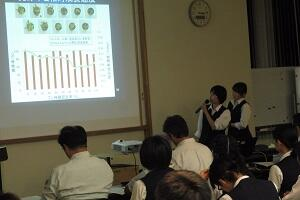
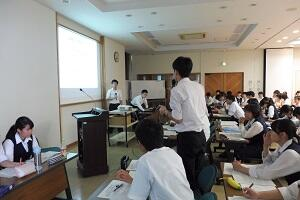
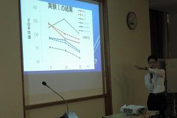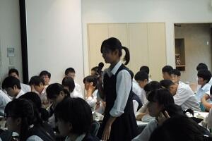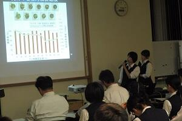 平成30年度 SSH生徒研究発表会
投稿日時 : 2018/08/22
sakura-h
8月7～9日の3日間、神戸国際展示場でSSH生徒研究発表会が開かれました。現在SSH校に指定されている学校及び海外招聘校約230校が一堂に会し、ポスター発表や代表校による口頭発表を行いました。
本校からは理数科3年の石田 薫君、三枝 晴仁君の2名が「硝酸銅なのに緑？」というテーマで発表しました。化学の先生方も勘違いしている事柄について丁寧に考察したので、高校生よりも先生方がたくさんブースを訪れていたのが印象的でした。
また、今年1月に海外研修で訪れたシンガポールのHwa Chong Institutionも招聘されており、旧交を温めることが出来たのも良かったです。

本校からは理数科3年の石田 薫君、三枝 晴仁君の2名が「硝酸銅なのに緑？」というテーマで発表しました。化学の先生方も勘違いしている事柄について丁寧に考察したので、高校生よりも先生方がたくさんブースを訪れていたのが印象的でした。
また、今年1月に海外研修で訪れたシンガポールのHwa Chong Institutionも招聘されており、旧交を温めることが出来たのも良かったです。
第８回サイエンススクールフェスティバル
投稿日時 : 2018/07/31
sakura-h
７月２９日（日）千葉工業大学で第８回サイエンススクールフェスティバルに化学部、生物部、電気部の生徒１７名が参加しました。
生徒たちは、小中学生に向けて理科に関する体験ができるブースの運営を行いました。
別の生徒たちは、交流・相談ブースでは、消化酵素を使った夏休みの自由研究についてのアドバイスをしていました。
午後は、当日初めて交流した他校の生徒と、モールを使って２０ｃｍ以上の高さにできるだけ多くのピンポン玉を乗せる競技に参加しました。
生徒たちは、小中学生に向けて理科に関する体験ができるブースの運営を行いました。
 | ||
| 生物部「しじみ釣りと、しじみの秘密」 | ||
 |  | |
| 電気部「レゴロボットで遊ぼう」 | 化学部「スライムをつくってみよう」 | |
別の生徒たちは、交流・相談ブースでは、消化酵素を使った夏休みの自由研究についてのアドバイスをしていました。
午後は、当日初めて交流した他校の生徒と、モールを使って２０ｃｍ以上の高さにできるだけ多くのピンポン玉を乗せる競技に参加しました。
SSH講座「植物の成分を精製してみよう！」
平成３０年７月１０日（火）の午後、佐倉市の株式会社常磐植物化学研究所において「植物の成分を精製してみよう！」および「植物の色を見てみよう！」をテーマにSSH講座が開催されました。１年生２０名、２年生２名の計２２名が参加し、実験実習、施設見学、ハーブ園研修を行いました。
実験実習では、甘草エキスからその主成分であるグリチルリチン酸の分離に加え、ブルーベーリーやクチナシの花びらから取り出した色の成分が液性によりどのように変化するのかも体験しました。
施設見学では、原料から製品となるまでの一連の流れや研究室での製品チェックの様子などを、わかりやすく説明していただきました。
ハーブ園では、ブルーベリー、クレソン、カレープラント、ライスイヤ、ステビア、サンショ、マロウ、クチナシ、ニッコウキスゲなどについて触れたり、においを確認したり、味をみたりしながら研修しました。最後に暑さを和らげるような冷たい特性ハーブティーも試飲しました。
午後の４時間ほどの講座でしたが、とても充実した講座になりました。
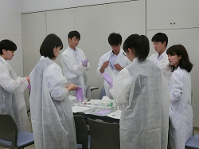

 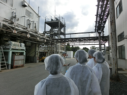
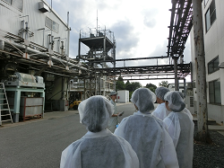 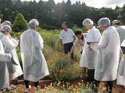
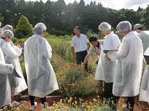

実験実習では、甘草エキスからその主成分であるグリチルリチン酸の分離に加え、ブルーベーリーやクチナシの花びらから取り出した色の成分が液性によりどのように変化するのかも体験しました。
施設見学では、原料から製品となるまでの一連の流れや研究室での製品チェックの様子などを、わかりやすく説明していただきました。
ハーブ園では、ブルーベリー、クレソン、カレープラント、ライスイヤ、ステビア、サンショ、マロウ、クチナシ、ニッコウキスゲなどについて触れたり、においを確認したり、味をみたりしながら研修しました。最後に暑さを和らげるような冷たい特性ハーブティーも試飲しました。
午後の４時間ほどの講座でしたが、とても充実した講座になりました。
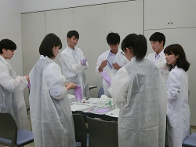
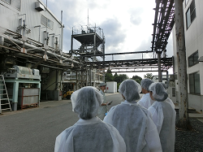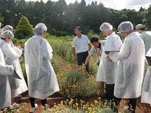 ＳＳＨ講座「チバニアンって何だろう？」を開催しました
7月17日（火）午後，本校地域交流施設にて，現在登録申請中のチバニアン研究の第一人者，茨城大学理学部地球環境科学領域教授の岡田 誠先生をお招きしてＳＳＨ講座が開催されました。
集まった生徒は理数科・普通科を問わず100人あまり。まず，まだ地学を履修していない１年生向けに，３年生地学履修者からの研究発表が60分間行われ，チバニアンについての解説が笑いを交えて楽しく行われました。実はこのとき，大御所の岡田先生が後方でご覧になっており，３年生諸君はそれに気付いた瞬間さぞかし緊張のどん底を味わったことでしょう（笑）。そしてついに岡田 誠先生のご登場です。
講義は地質学の基礎から今をときめく「チバニアン」の最新事情まで，たいへん楽しい内容でした。科学大好き生徒たちは，軽妙に語られる地質学の魅力に惹き付けられ意気盛ん。例えば酸素同位体比率が語る水環境変動のお話はたいへん分かりやすく，なるほどそういうことか！と腑に落ちましたし，気候変動には短期的・長期的な視点があること，宇宙放射線と地磁気変動との関係，そしてチバニアンとはそもそも何なのかなど，新しいことを知るわくわくした楽しみを分かち合えた120分間でした。
講義後も白熱した質疑応答が30分以上続き，講義をよく聴いていないとわからない細かな質問が生徒たちから矢継ぎ早に飛び出しました。岡田先生はそれらにひとつひとつ丁寧にお答えくださり，そのお人柄と相俟って，科学の道を志す生徒たちの心に確かな火を灯してくださいました。
今後も，チバニアンの登録が叶いゴールデンスパイクが打ち込まれるその日まで，佐高生一同注目していきたいと思います。岡田 誠先生，有り難うございました。


集まった生徒は理数科・普通科を問わず100人あまり。まず，まだ地学を履修していない１年生向けに，３年生地学履修者からの研究発表が60分間行われ，チバニアンについての解説が笑いを交えて楽しく行われました。実はこのとき，大御所の岡田先生が後方でご覧になっており，３年生諸君はそれに気付いた瞬間さぞかし緊張のどん底を味わったことでしょう（笑）。そしてついに岡田 誠先生のご登場です。
講義は地質学の基礎から今をときめく「チバニアン」の最新事情まで，たいへん楽しい内容でした。科学大好き生徒たちは，軽妙に語られる地質学の魅力に惹き付けられ意気盛ん。例えば酸素同位体比率が語る水環境変動のお話はたいへん分かりやすく，なるほどそういうことか！と腑に落ちましたし，気候変動には短期的・長期的な視点があること，宇宙放射線と地磁気変動との関係，そしてチバニアンとはそもそも何なのかなど，新しいことを知るわくわくした楽しみを分かち合えた120分間でした。
講義後も白熱した質疑応答が30分以上続き，講義をよく聴いていないとわからない細かな質問が生徒たちから矢継ぎ早に飛び出しました。岡田先生はそれらにひとつひとつ丁寧にお答えくださり，そのお人柄と相俟って，科学の道を志す生徒たちの心に確かな火を灯してくださいました。
今後も，チバニアンの登録が叶いゴールデンスパイクが打ち込まれるその日まで，佐高生一同注目していきたいと思います。岡田 誠先生，有り難うございました。
SSH講座「加速器で迫る世界」
7月11日（水）、SSH講座「加速器で迫る世界」として、本校物理実験室にて高エネルギー加速器研究機構(KEK)の宍戸寿郎氏に、宇宙や物質の始まり、KEKの研究施設や研究内容について講義をしていただきました。実際に研究で使われている装置の一部や、最新の研究内容に触れることで、生徒たちの興味や探究心を引き出す良い機会になりました。次回8月23日は、実際につくば市にある研究施設に足を運び、見学する予定です。
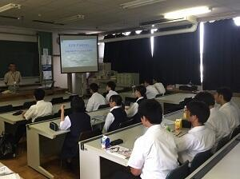
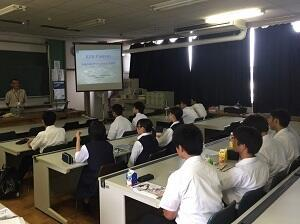
第9回千葉県高等学校課題研究発表会に参加してきました
投稿日時 : 2018/03/20
sakura-h
3月17日（土）、千葉工業大学を会場にして行われた千葉県高等学校課題研究発表会に理数科生徒が参加してきました。この発表会は、研究推進のヒントを得るために行われ県内各地から計197件の発表がありました。本校は2年生が全員発表、1年生は見学でした。
午前中、各科目に分かれ各校の代表が口頭発表を、午後はポスター発表を行ないました。たくさんの助言者からいろいろな意見やアドバイスを頂き、今後の研究への参考に、また1年生は自分達が始める研究のヒントを掴んだようです。


 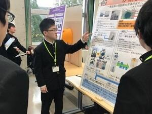
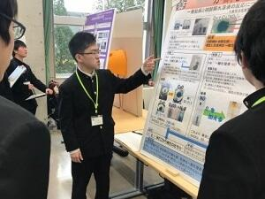 海外研修 終了しました。
投稿日時 : 2018/01/22
sakura-h
最終日は、JSTシンガポール事務所所長 佐藤正樹氏からシンガポールが教育や研究に力を入れる理由や今後の方向性について伺いました。その後、シンガポール国立大学で、害鳥であるカラスを排除する為のドローンの研究をされている末田航先生からお話を伺いました。特に末田先生は美術大学からベンチャー企業を経て、研究の道に入られたので、生徒達はその生き様から感じることが多かったようです。
午後はGardens by the Bay を訪れ、小グループに分かれガイドに説明して貰いました。やっと英語に慣れてきたので積極的に質問していた様子が見受けられました。その後、China Town で自由時間を取った後、ナイトサファリに向かいました。深夜便でチャンギ空港から出国し、20日朝 成田空港に帰国しました。
生徒にとっては、課題研究で夜遅くまで実験を行ったり、ポスターを製作したりした苦労が報われた、刺激的で充実した5日間だったと思います。ここで得た事を今後の生活に是非活かして欲しいと考えます。


2年理数科 海外研修 学校交流を行いました。
投稿日時 : 2018/01/19
sakura-h
海外研修の目的のメインである課題研究の発表をする現地の学校との交流を行いました。訪問先である Hwa Chong Institution は、 INTEL ISEF2017 や化学グランドコンテストにシンガポール代表を毎年のように送り出している優秀な学校です。
毎日朝７時半から生徒全員が集合し、国旗掲揚が行われます。午前中は敷地内見学や数名ずつに分かれ数学、化学、地理などの授業を体験しました。また、生徒会選挙の立会演説会にも参加させて頂き、日本のそれとの大きな違いを感じたようです。
午後は両校の課題研究をポスタープレゼンテーションし合いました。はじめの頃はやや緊張気味でしたが、慣れてくると打ち解け合い仲良く意見交換出来ました。


SSH海外研修事前指導 終了しました
海外研修でのポスター発表の練習に、千葉大学在籍の留学生や海外研修体験者をお招きし、プレゼン練習を年末から繰り返してきました。
１月１２日に行われた第４回をもって終了し、いよいよ本番を迎えるばかりとなりました。今までの成果を十分発揮してきて欲しいものです。


生活の中で利用されている化学と企業の開発の取り組み
平成２９年１２月１４日、本校に（株）DICから髙橋雅人様始め４名の研究者の方々をお招きしました。研究者の方々は、DICが行っている研究活動の一端を紹介しつつ、大学で行われている研究活動との目的や方向性の違いなどについて説明してくださいました。また、普段の生活や研究者を歩もうと思ったきっかけなどについても話してくださいました。進路選択を考え始めた生徒にとって、とてもタイミングの良い内容でした。
実験実習は、藻であるスピルリナからいろいろな溶媒を用いて色素を取り出す実験（そのうちの一つはガリガリ君の青色色素であるフィコシアニンでした）。もう一つは粘性を定量する簡易装置を用いて、ハチミツとマヨネーズの粘性の違いについて実習しました。操作を済ませたら終わりでなく自分達の実験結果から考察を発表するミニ研究体験でした。
 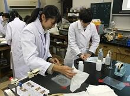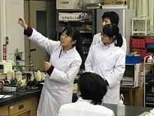
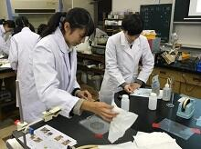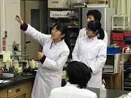 遺伝子解析講座
平成２９年１２月９日（土）、東邦大学理学部にて、「遺伝子解析講座」が行われました。ＰＣＲ法を利用しての、筋肉の特性を調べる実験です。佐藤浩之教授による講義を受けた後、自分の頬の粘膜細胞から遺伝子を抽出して調べる実験とあって、各自真剣に取り組んでいました。自分がパワースプリントタイプか持久系タイプかその結果を確認し、それぞれの特性を学びながら、遺伝子解析を行う上での利点と問題点について、よく勉強していました。


DNAからかたち作りを考える ～細胞性粘菌～
平成２９年１１月１１日（土）、東邦大学理学部において「DNAからかたち作りを考える～細胞性粘菌～」をテーマにSSH講座が開催されました。１年生１０名、２年生１名の計１１名が参加し、細胞性粘菌を用いて遺伝情報から形質が発現するまでの一連の流れについて学びました。粘菌の一種であるキイロタマホコリカビの観察や、施設見学も行いました。


クリスマスレクチャー「有機化学実験講座」
平成２９年１２月２３日（土）、２４日（日）の２日間、東邦大学理学部においてクリスマスレクチャー「有機化学実験講座」が開催されました。
２年生１名、１年生１４名の計１５名（普通科９名、理数科６名）が参加し、解熱鎮痛剤として使用されている「アスピリン（アセチルサリチル酸）」を実際に合成・精製し、精製したものに対して融点測定や定性試験、質量分析、機器分析（MS・IR・NMR）、分子モデリングで同定を行いました。大学の先生やTAの学生さんのサポートを受けながら、一人ですべての工程を行い、全員無事にアスピリンを合成できたことを確認することができました。
 | 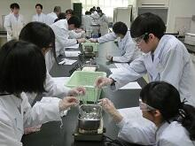 |  |
| 講義 | 合成実験 | 合成実験 |
| 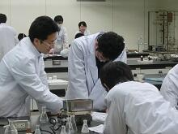 | 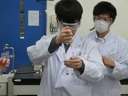 |  |
| データ分析 | 定性試験 | 融点測定 |
| 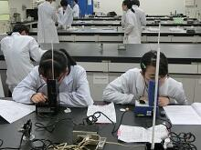 |  |  |
| 融点測定 | IR実習 | 分子モデリング実習 |
英語による高校生科学研究発表会
12月9日、茨城県立緑岡高校主催の英語による科学研究発表会に参加してきました。
来月に計画されている海外研修(理数科2年全員シンガポールにて研修)の事前指導の一環として理数科2年生10名で水戸を訪れました。
茨城県内はもちろん、関東近県や遠くは岡山県からの参加もあり、活気あふれる発表会で、各自いろいろな事を学び、感じ、自分たちの研修のモチベーションアップに繋がったようです。


サイエンスダイアログを受講しました。
投稿日時 : 2017/12/04
sakura-h
サイエンスダイアログは、日本学術振興会主催で世界各国から日本の大学・研究機関等へ研究の為に滞在している若手外国人研究者を各学校に派遣し、自身の研究や出身国に関する講義を行なうプログラムです。本校では理数科１・２年生対象に、学年ごとに概ね1回ずつ開催しています。
11月29日に理化学研究所で原子間力顕微鏡に用いるレーザー光の研究を行なっているDr.Maria Vanessa Balois をお招きし、理数科２年生対象に講座を開きました。生徒は、彼女の出身国であるフィリピンの地理や習慣、食事などの話を伺うとともに、彼女の科学者になるまでの過程と取り組んでいる研究内容について講義を受けました。ストレッチやダンスを取り入れるなどユニークな講義でした。
とてもわかりやすい英語で話してくださった上に、休憩時間にも生徒の中に入り込んで話をしてくださるなど親しみやすく明るい人柄でしたので、講義終了後も生徒が残って質問をしていた姿が印象的でした。
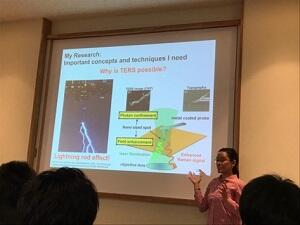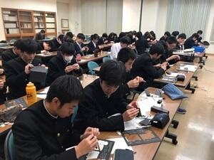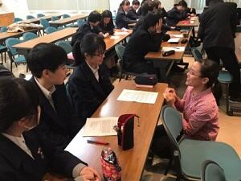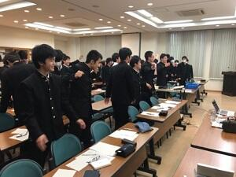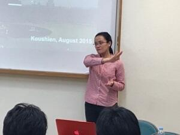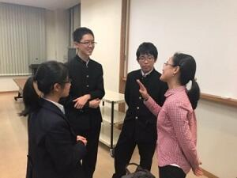
低温科学講座
１１月１４日（火）の午後、東邦大学理学部から西尾豊先生をお招きして、１年理数科（４０名）を対象に「低温科学講座」を実施しました。沸点が－１９６℃の液体窒素を用いての体験を伴う講義でした。液体窒素に実際に触れたり、液体窒素で空気や酸素を冷却し、液体状態の酸素の色や燃焼の様子、ネオジウム磁石との反応を確認したり、空気から炭酸固体（ドライアイス）を取り出したり、超電導物質を用いての超電導現象（マイスナー効果やピン止め効果）を実際に見たり触れたりしました。午後の短い時間でしたがとても内容が盛りだくさんの講座でした。
 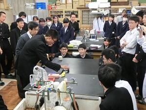
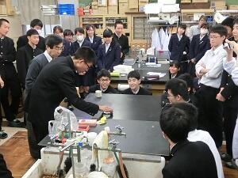

第14回 高校化学グランドコンテスト 最終選考会
投稿日時 : 2017/11/06
sakura-h
SS課題研究Ⅰ（2年理数科履修）で化学分野を専攻しているグループのうち、２チームが名古屋市立大学を会場にして行われた第１４回高校化学グランドコンテストに参加してきました。化学を専門にしている研究者や先生や興味を持っている生徒達が集まっているので、参考になるアドバイスが多く、今後の研究に弾みが付きそうです。
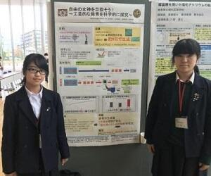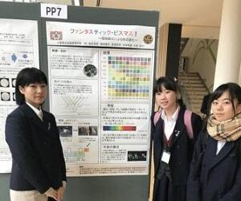
SS課題研究Ⅱ口頭発表会
投稿日時 : 2017/10/06
sakura-h
９月２６日（火）午後１時１５分から，本校の地域交流施設にて，「SS課題研究Ⅱ口頭発表会」が理数科の１・２年生の進行運営によって行われました。理数科の３年生１９グループが，昨年から一生懸命に取り組んだ研究成果をスライドにまとめて発表しました。また，後輩達との活発な質疑応答がなされました。
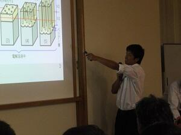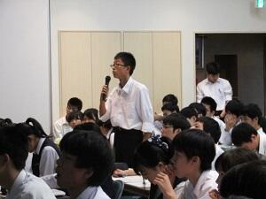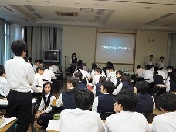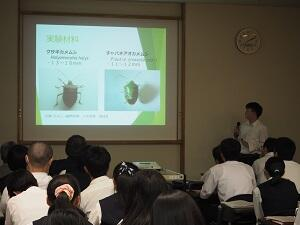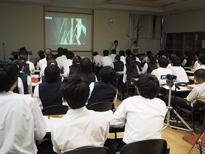
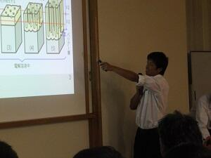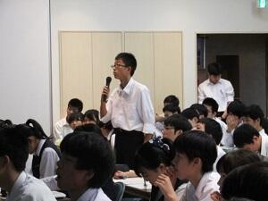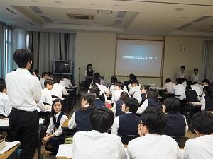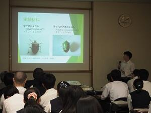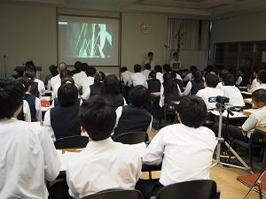
第11回 高校生理科研究発表会
理数科2年生全員が、SS課題研究Ⅰの中間発表的な位置づけで、9月30日に千葉大学で開催された発表会に参加しました。
年度当初に希望した物理分野6テーマ、化学分野6テーマ、生物分野5テーマ、数学分野1テーマ計18テーマに分かれ、夏休みや休日を返上して実験・観察を繰り返し、初めてポスターを作成し校外での発表会に臨みました。2時間の発表時間が「あっという間だった」という発言が多く聞かれ、発表を聞いて貰える喜びを感じたようです。また、中間発表的だったにも関わらず、数学分野では優秀賞を受賞することが出来ました。
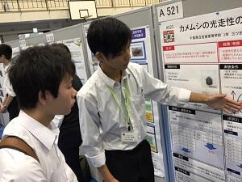


年度当初に希望した物理分野6テーマ、化学分野6テーマ、生物分野5テーマ、数学分野1テーマ計18テーマに分かれ、夏休みや休日を返上して実験・観察を繰り返し、初めてポスターを作成し校外での発表会に臨みました。2時間の発表時間が「あっという間だった」という発言が多く聞かれ、発表を聞いて貰える喜びを感じたようです。また、中間発表的だったにも関わらず、数学分野では優秀賞を受賞することが出来ました。
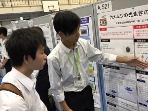
科学で探る ～地球のこと、宇宙のこと～
１０月２日（月）、SSH講座「科学で探る ～地球のこと、宇宙のこと～」で、茨城県つくば市を訪れました。午前は、防災科学技術研究所にて、大型耐震実験施設と大型降雨実験施設の見学をしたのち、Dr.ナダレンジャーによる自然災害実験教室に参加しました。雪崩や地震、液状化現象などについて、実験を通して楽しく学びました。午後は、JAXA筑波宇宙センターを訪問し、きぼう運用管制室や宇宙飛行士養成エリアを見学しました。管制室を訪れた際は、生徒から多くの質問がでました。
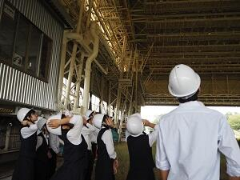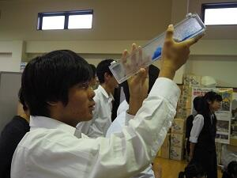

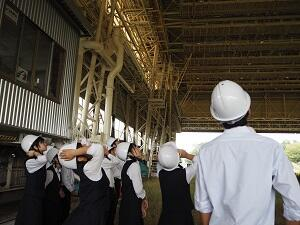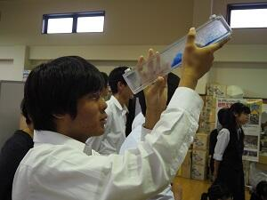
「KEK（高エネルギー加速器機構）」見学
８月２３日（水）最先端の粒子加速器を誇るつくば市のKEKを訪問しました。
午前は、ノーベル賞の小林・益川理論を実験的に証明するなど、多くのすばらしい成果を上げている加速器を中心に施設を見学しました。午後は、大学生・大学院生が全国から集まり実験・研究を行うイベント「サマーチャレンジ」を見学しました。
大学生から研究の内容や楽しさを話してもらったことで、生徒は研究を身近に感じることができたようです。

午前は、ノーベル賞の小林・益川理論を実験的に証明するなど、多くのすばらしい成果を上げている加速器を中心に施設を見学しました。午後は、大学生・大学院生が全国から集まり実験・研究を行うイベント「サマーチャレンジ」を見学しました。
大学生から研究の内容や楽しさを話してもらったことで、生徒は研究を身近に感じることができたようです。
７月２７日（木）国内サイエンスツアー
投稿日時 : 2017/09/15
sakura-h
平成２９年７月２７日（木）から２９（土）まで理数科１年生４０名が国内サイエンスツアーへ行きました。

群馬県神流町恐竜センターでは化石発掘体験、群馬県立ぐんま天文台では天体観測について学びました。
尾瀬ヶ原を歩いて調査した結果を発表しました。


変化アサガオの不思議
平成２９年７月２６日（水）本校理科館において，国立歴史民俗博物館 くらしの植物苑の特別企画「伝統の朝顔」の観察会で講師をされている 仁田坂英二博士（九州大学理学研究院）を講師に迎え，アサガオと遺伝子の関係について講義していただきました。1年生11名，2年生2名が受講しました。初めてその姿を目にした生徒はその異形ぶりに驚嘆し，かつて育てた変化アサガオ（おそらく出物）から種子が採取できなかった経験をもつ生徒はその理由に納得したようです。メンデル遺伝の話に始まり、特に奇異な変異を誘発しているトランスポゾン（動く遺伝子）の転移機構についてお話をしていいただき，生物学の奥深さを感じることできました。
仁田坂先生の爬虫類の単為生殖に関する研究のお話やアサガオの研究は自分がやるしかないと思った子供時代からのアサガオに対する熱意等を伺い，受講者は刺激を受けたようです。

仁田坂先生の爬虫類の単為生殖に関する研究のお話やアサガオの研究は自分がやるしかないと思った子供時代からのアサガオに対する熱意等を伺い，受講者は刺激を受けたようです。
SSH生徒研究発表会
８月８日～１０日まで兵庫県の神戸国際展示場で行われた「スーパーサイエンスハイスクール生徒研究発表会」に３年理数科の関達也くん参加してきました。「”もったいない”からバイオエタノール ～エタノール生成過程の検討～ 」という研究タイトルで、廃棄物由来のセルロースからエタノールの生成過程の検討を行うという内容で発表してきました。

SSH講座「植物の成分を精製してみよう！」
平成２９年７月２１日（金）の午後、佐倉市内の株式会社常磐植物化学研究所において「植物の成分を精製してみよう！」をテーマにSSH講座が開催されました。
１年生１６名、２年生２名の計１８名が参加し、甘草（カンゾウ）エキスから、その主成分である、グリチルリチン酸を分離し確認する実習、施設見学、ハーブ園研修を行いました。
グリチルリチン酸の分離実習では、TLCによる分離およびUVライト下での確認実習の他、4％ショ糖水溶液と0.4%グリチルリチン酸水溶液の甘味体験なども行いました。
ハーブ園研修では、園内で採れた数種類のハーブを使ったハーブティの試飲しながら、オタネニンジン、ウコン、エキナケア、クチナシ、ブルーベリーなどについての講義、園内見学中にはニッコウキスゲの花びらの試食も体験しました。


INTEL ISEF（国際科学技術フェア）に日本代表として参加しました
JSEC（日本科学技術チャレンジ）2016 でJFEスチール賞を受賞した理数科３年（学年は受賞時）上西里佳、田山智恵が、アメリカ合衆国ロサンゼルスで開かれた INTEL ISEF（国際科学技術フェア）2017にJSEC日本代表チームの一員として参加してきました。
とても厳しいブース設営チェックから審査日、一般公開日と目まぐるしくもとても充実した１週間を送ってきました。
受賞はなりませんでしたが、高校生世代の研究の世界基準、日本代表チームのチームワークの良さ、ウェルカムパーティで知り合った海外の生徒との交流、研究とOffのメリハリ（貸切Universal Studio）などを通して、沢山のことを学べたと思います。


写真説明
１→ 審査日の朝、日本代表チームで健闘を誓い合いました。
２→ 審査日では朝から夕方まで審査員とディスカッションしました。
３→ 一般公開日には、全員浴衣姿で発表し、海外の方々から撮影依頼がひっきりなしでした。
４→ 貸切Universal Studioでは、Finalistは深夜まで大はしゃぎしていました。
千葉県高等学校課題研究発表会
３月１８日（土）に、市川学園市川中学校・高等学校にて第８回千葉県高等学校課題研究発表会が行われました。本校からは、２年理数科の生徒がポスター発表で参加し、口頭発表の代表として、浅見陽さん、市川玲輝さんが「ヒートアイランドをクールに～ヒートアイランド現象の原因と対策～」というタイトルで発表を行いました。


生徒研究成果合同発表会
２月５日に、東京都立戸山高等学校にて、生徒研究成果合同発表会へと参加してきました。本校からは、英語と日本語のポスター発表で３年理数科の「Coloring Anodized Aluminum」の研究、口頭発表では２年理数科の「このガラス、安いんです。～還元雰囲気における銅赤ガラスの作製～」の研究発表を行ってきました。

SSHシンガポール研修報告
１月１７日～２１日の日程で、２年理数科生徒３８名がSSHシンガポール研修へ参加してきました。１日目（１７日）は、９時に成田空港に集合し、結団式を行った後、保護者の方々や先生方に見送られながら日本を出発しました。約７時間４０分のフライトを経て、無事シンガポールに到着。翌日に備えて、夕食後は各自ホテルで体を休めました。


２日目（１８日）の午前は、SEA Aquariumにて、英語によるバックヤードツアーに参加してきました。開館前からのツアーだったため、静かな館内で生物の生態を詳しく知ることができました。また、餌やりの様子も見学でき、生徒も積極的に質問をしていました。午後は、Gardens by the BAYで少人数に分かれて、英語によるガイドツアーを行い、植物の生態や特徴等を学んできました。英語によるツアーが続いた１日でしたが、聞き取りやすく、内容を理解できた生徒も多かったようです。またこの日は研究発表に向けて、夕食後にプレゼンテーション練習を夜遅くまで行いました。


３日目（１９日）の午前は、JSTシンガポールを訪問し、佐藤所長によるシンガポールの科学技術戦術の講話をいただきました。さらに、シンガポール国立大学の松尾さんより、研究者生活とがん細胞に関する講話を聴きました。海外で働くこと、研究者として生活することを身近に感じ、講話後には活発な質疑応答となりました。昼食は、南洋工科大学の食堂を利用し、生徒はそれぞれ好きなものをカウンターで注文し、様々な国の料理を堪能していました。午後は、南洋工科大学にて、佐藤准教授より昆虫サイボーグに関する講話をしていただきました。時折笑いも起こるような終始和やかな雰囲気で、１時間があっという間に感じる魅力的な講話でした。その後、生徒による口頭・ポスター発表を行い、プレゼンテーションに関してアドバイスをいただきました。プレゼンテーションのレクチャーは全て英語で行いましたが、濃厚な指導をもらえたことで生徒は大変満足していました。


４日目（２０日）の午前は、班ごとに分かれて市内を自由に散策しました。午後は、この研修旅行のメインである南洋女子高等学校を訪問しました。今年度百周年を迎える南洋女子高校の校内を見学したり、互いに研究の口頭発表や、本校によるポスター発表も行いました。生徒は、緊張しながらも積極的に質問をしたり、自ら話しかけ交流する姿も見られました。夜は、ナイトサファリに参加し、トラムに乗車しながら夜に活動する動物の生態を観察しました。研究発表を終えた後だったため、生徒は大変リラックスした様子でした。その後、深夜２３時５５分発の飛行機に乗り、シンガポールを後にしました。


５日目（２１日）の７時３０分に無事日本に到着し、解散式の後、生徒は帰路につきました。誰一人体調を崩すことなく過ごすことができ、また研修後の生徒は大きく成長したように見れました。


高校生科学技術チャレンジでJFEスチール賞を受賞しました
本校理数科３年上西 里佳、田山 智絵の２名がJSEC2016において「アルミラクル ～天然染料を用いたアルマイトの着色～」でJFEスチール賞を授賞しました。その結果、来年５月に米国L.Aで行われる国際学生科学技術フェア ISEF2017に日本代表チームの一員として派遣されることになりました。
JSEC2016とは、高校生科学技術チャレンジのことで、朝日新聞・テレビ朝日主催の高校生及び高等専門生（３年生まで）を対象とした科学技術の自由研究コンテストです。日本全国から今年は約２５０強の応募があったようです。審査は専門家の審査委員による、２回の書類審査とそれを通過した３０作品によるプレゼンテーション審査で優秀な研究作品が選ばれます。上位入賞者の中から６グループが米国で開催される国際学生科学技術フェアIntel ISEF2017に派遣されます。
◎研究について
紙に色を着けるように、金属にも簡単に着色したいと考え、アルミニウムへの着色を試みました。一般的には合成着色料が使用されていますが、今回、天然染料（玉ねぎの皮の色素など）を用いた着色方法を確立させました。それは合成着色料には身体に悪影響を及ぼす恐れがある重金属が含まれているものが多いので、天然染料なら安全性が高く、身の回りの生活雑貨等に活かせると考えたためです。
結果的に、天然染料を用いたアルマイトの着色方法について、どんな色素がどのようにして着色出来ているのか等の結論を出せたことが研究の成果と言えます。 （生徒記）

サイエンスキャッスル2016に参加しました
投稿日時 : 2016/12/26
sakura-h
１２月２４日（土）TEPIA先端技術館で行われた「サイエンスキャッスル2016」に、理数科の生徒がポスター発表として参加してきました。緊張しながらも精一杯発表し、時には白熱した議論にもなりました。

第３回 Symposium for Women Researchersに参加しました
１１月６日（日）、東京都立戸山高等学校で開催された「第３回 Symposium for Women Researchers」に本校理数科の生徒が参加してきました。女子向けに行われた研究発表会だっただめ、ランチの際には各々の星座に分かれて他校生徒や大学院生らと交流を深めました。また、市川麻央さん、加藤実桜さんの研究がグッドジョブ賞をいただきました。


課題研究口頭発表会
平成２８年９月２７日午後から、本校地域交流施設にて、「SS課題研究Ⅱ口頭発表会」が行われました。理数科行事として、３年生が昨年度からの自らの研究の成果を理数科の1・2年生や職員の前で、それぞれパワーポイントにまとめて発表しました。数学２、物理８、化学４、生物５の１９グループが発表時間５分、質疑応答３分の中で自らの研究の成果を理解してもらおうと、いろいろ工夫しながら説明、奮闘していました。1・2年生の質問に対して懸命に応答する姿が見られました。


高校生理科研究発表会
９月２４日（土）、千葉大学で行われた「高校生理科研究発表会」に、理数科の生徒が参加してきました。２年生から始まった課題研究の成果を発表するのが今回初めてだったため、多くの生徒が緊張して挑んでいました。相手にわかりやすく伝わるよう、様々な工夫をする生徒の姿が見られました。


科学コミュニケーター体験講座
平成２８年８月４日に、お台場の日本科学未来館にて佐倉アクティブ「科学コミュニケーター体験講座」が開かれました。午前中は自由に館内の見学をしながら、科学コミュニケーターさんにインタビューするなど、科学コミュニケーションの方法や重要性に関して理解を深めていました。また、１０月３日の未来館での展示解説実習に向けて、展示物の情報収集をしっかりと行っていました。午後は、対話型ワークショップに参加し、エネルギーについてディスカッションを行いました。生徒が主婦や政治家、原発立地地域の住民等、それぞれの立場に立ち、与えられた多くのデータからどのような意見が言えるのか議論をしました。生徒たちは、自分たちの考えをしっかりと練り意見をぶつけながらも、他グループの声にもよく耳を傾け考えていました。最後には、「それぞれの立場の役になったことで、エネルギー問題を身近に感じ、自分の事として考えられるようになった。」「幸せの方向性が変わると見方が変わるが、正解はない。広い視野を持って考えることが大切。」と感想を述べていました。


国内サイエンスツアー
７月２８日（木）～７月３０日（土）に群馬県（尾瀬ヶ原他）にて行われました。
| 神流町恐竜センターにて この後化石発掘体験と恐竜の足跡見学 | 県立ぐんま天文台にて 国内最大級の反射式望遠鏡を見学 |
| 生憎の天候で望遠鏡観望はできなかったが、 簡易分光器を作成し、光の観察方法を学ぶ | |
  | |
鳩待峠から尾瀬ヶ原をグループごとに観察、夜はその成果をグループでまとめプレゼン | |
シーボルトが紹介した植物
平成２８年７月２３日に、国立歴史民俗博物館くらしの植物苑にて「シーボルトが紹介した植物」と題した講演会に参加し、オランダのライデン大学付属植物園から寄贈された植物などの観察も行いました。講演会では、シーボルトが来日していた当時の植物研究と文化を学びました。生徒からは「シーボルトが植物を調べるときに、生態や性質、見た目だけでなく、日本の文化やその植物の利用方法までも調べているところを知って驚いた。」「物事を多方面から見ることが大切だと感じた。」という感想を述べていました。


グローバル・サイエンス講座
平成２８年７月１５日の３、４時限を用いて、２年理数科の生徒を対象に科学英語に関する「グローバル・サイエンス講座」が開かれました。講師は、筑波大学国際統合睡眠医科学研究機構の Kristopher S.MCEOWN 先生で、ご専門の睡眠心理学の研究内容に加え、出身国のカナダや研究者になった動機などのお話も幅広くして下さいました。オールイングリッシュでの講演でしたが、生徒は興味深く耳を傾け、質疑応答の際には多くの生徒が積極的に質問をしていました。